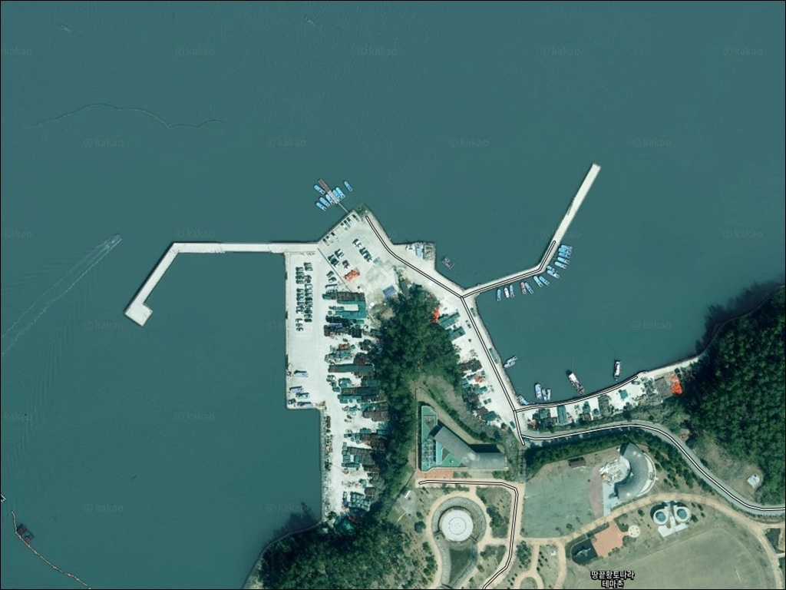
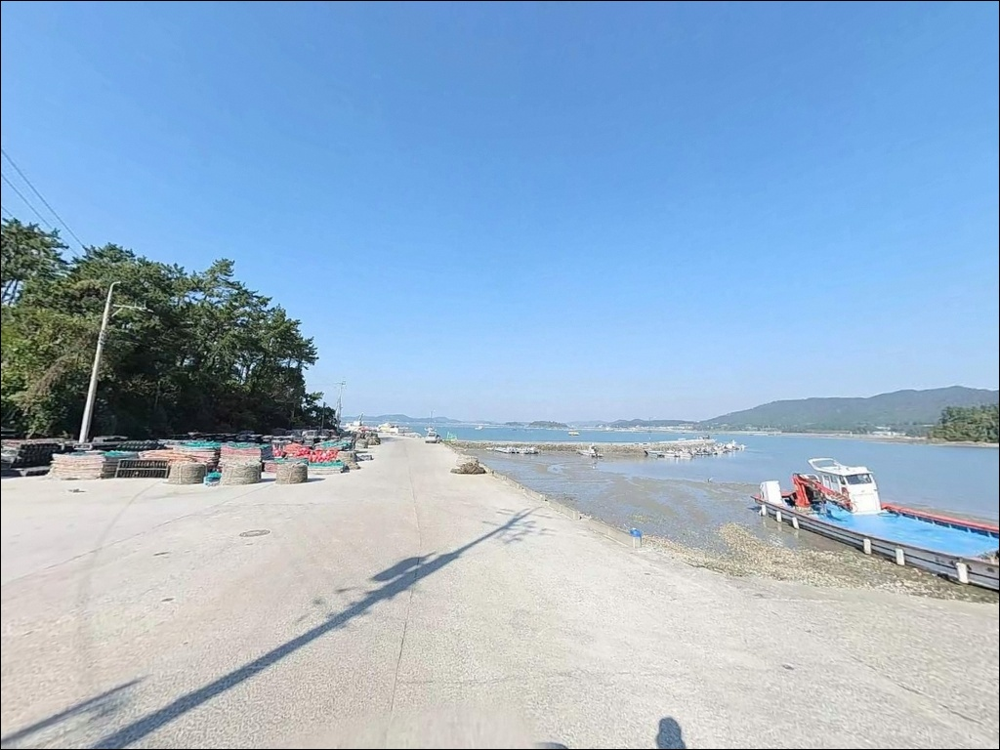
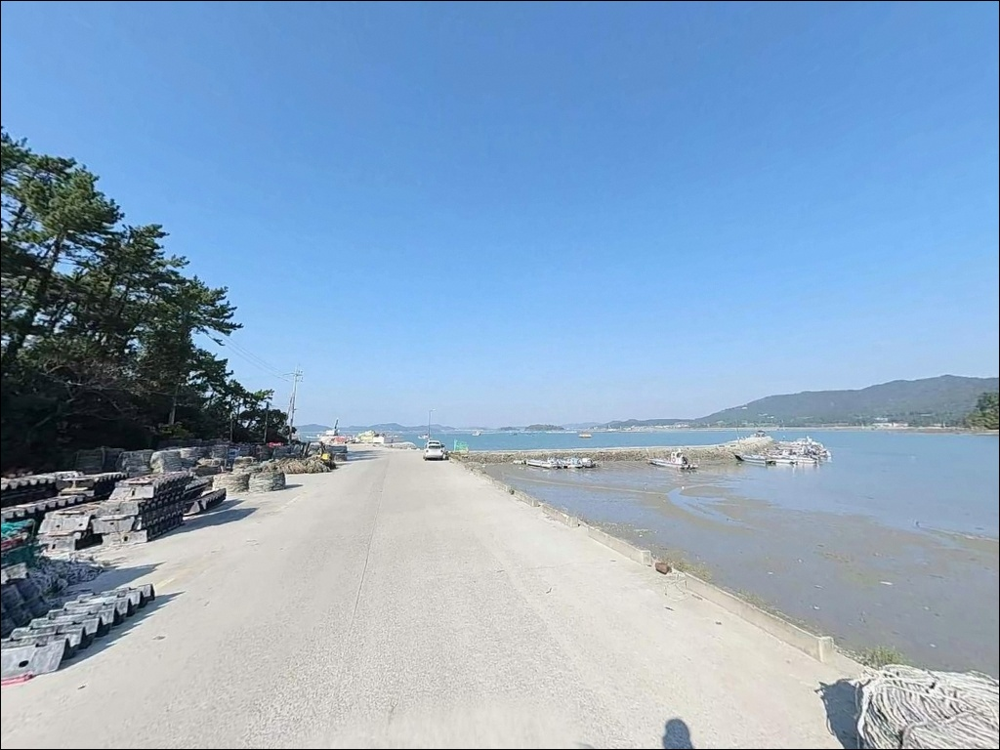
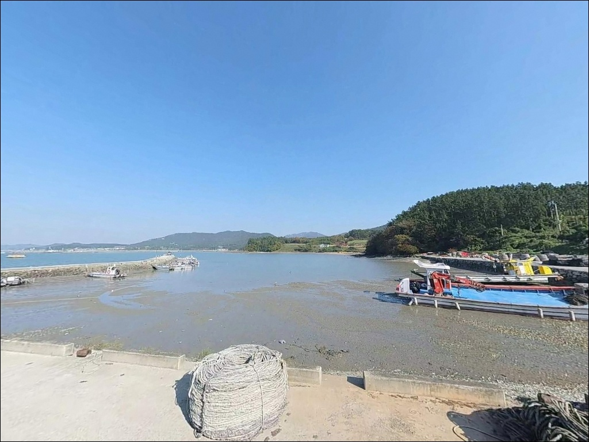
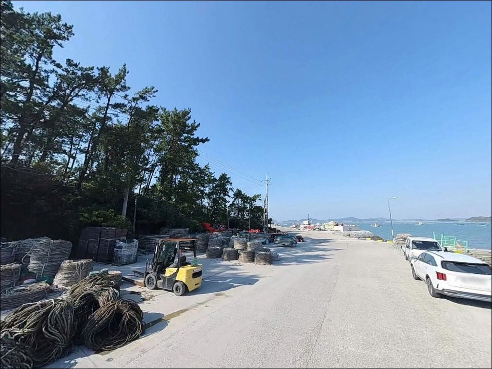
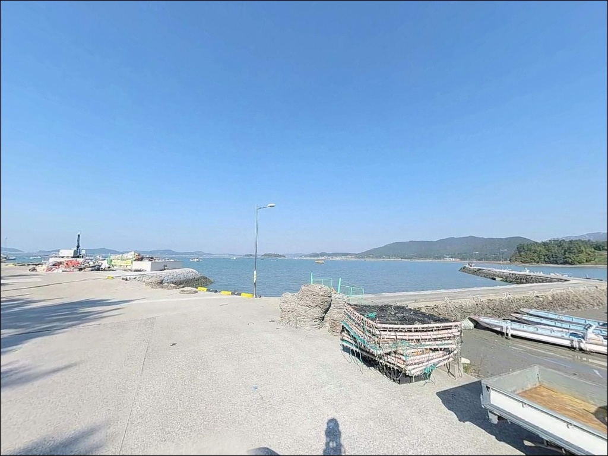
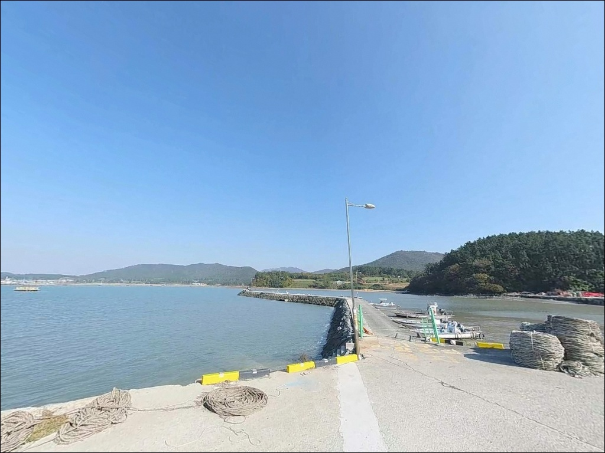
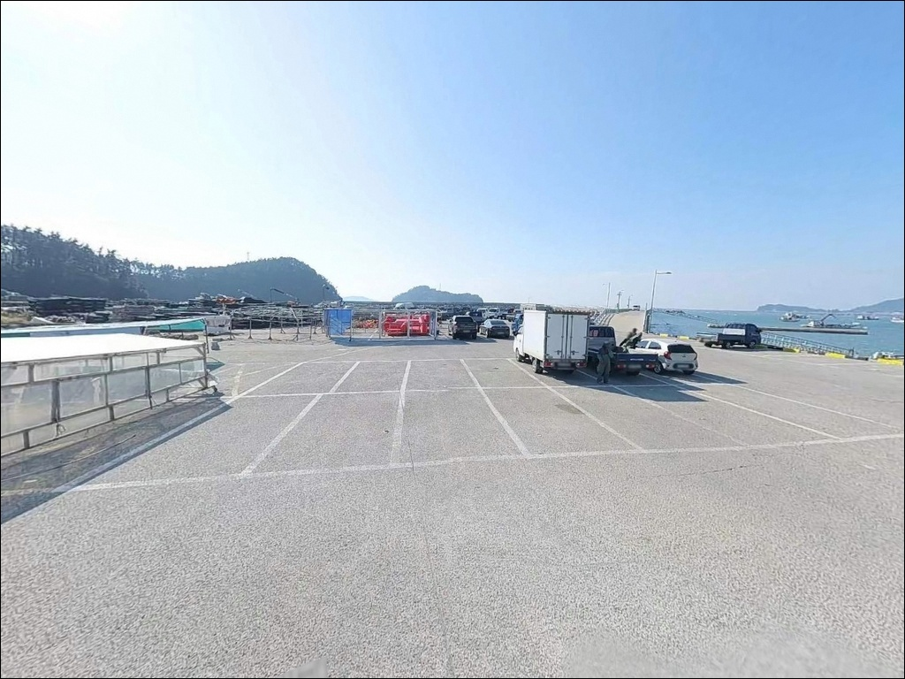
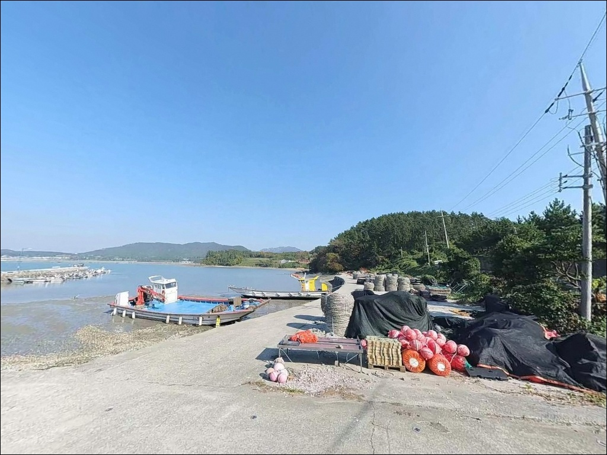

송호리방파제, 전남 해남군 한적해서 캠낚하기 딱 좋은 방파제 차박 낚시터
이 페이지에는 광고(제휴 링크 포함)가 있으며, 광고 링크를 통해 구매하면 운영자가 판매 수익 또는 수수료를 받을 수 있습니다. 포인트 사진: 카카오맵 스카이뷰·로드뷰. 이 페이지의 지도·사진 이미지는 카카오맵의 실제 서비스 이미지와 다를 수 있습니다.


포인트 안내
송호리방파제
전남 해남군 송지면 송호리 541-13
물때 확인 없이 이 방파제를 찾으면
간조 전후로 수심이 빠르게 낮아져
방파제 주변이 갯벌에 가까운 상태가 됩니다.
조수 간만에 따라 낚시 가능 수위가 크게 달라지는 구조라
만조 전후를 기준으로 진입 타이밍을 잡는 것이
이 포인트의 첫 번째 판단입니다.
전남 해남군 송지면 송호리,
땅끝마을 직전에 자리한 소형 지방어항입니다.
앞바다에 소규모 섬들이 분포해
너울이 크지 않고 물결이 잔잔한 편이지만,
외해와 직접 연결되는 구조라
기상 변화를 빠르게 받는 위치입니다.
이 글은 송호리방파제의
진입 동선, 물때 기반 낚시 여건,
차박 체류 조건, 대안 포인트 동선에 집중합니다.
조황 단정이나 특정 어종 보장은
이 글의 범위에 포함되지 않습니다.

1. 진입 동선과 포인트 접근성
해남읍에서 남쪽으로 약 41km,
55번 지방도를 통해 송지면 방향으로 내려오면
송호리에 닿습니다.
도로로 연결된 단일 진입 구조라
길을 잘못 들어설 여지가 적은 편입니다.
마을 안길을 통해 방파제까지 진입하는 구조로,
폭이 좁은 구간이 포함될 수 있습니다.
대형 SUV나 캠핑 장비를 갖춘 차량이라면
출발 전 위성지도로 진입로를 먼저 확인하고
회차 공간 여부도 함께 파악하는 것이 안전합니다.
주차는 방파제 진입로 주변 공터 외에도
인접한 송호해수욕장 무료 주차장(800여 대 규모)을
활용할 수 있습니다.
방파제까지 도보로 가깝기 때문에
주차장을 기점으로 삼는 방식이
대형 차량에 현실적인 선택입니다.

2. 차박 환경과 야간 체류 여건
방파제 바로 옆 송호해수욕장 주차장은
800여 대 규모의 넓은 공간입니다.
비수기(9월~6월)에는 차량이 드물어
공간 확보가 여유롭고,
낚시를 마친 뒤 자리를 옮기지 않고
바로 체류하기 좋은 구조입니다.
마을 내에 민박 57동이 분포해 있어
프라이버시는 낮은 편입니다.
야간에는 해수욕장 산책로 조명이 있는 구간도 있으나,
방파제 쪽은 개인 조명을 별도로 챙겨야 합니다.
앞바다 섬들이 너울을 차단하는 구조라
파도 소음이 심하지 않은 야간 환경이 유지됩니다.
차박이란 차량을 숙박 공간으로 활용하며
현장에서 하룻밤 머무는 여행 방식입니다.
방파제 인접 구간에는 해송림(전라남도 기념물 제142호)이
후면을 감싸고 있습니다.
이 구역 안에서의 취사·불피우기는
문화재 보호 원칙상 금지 대상이므로,
야영 위치는 해송림 경계 밖으로 잡아야 합니다.


3. 주변 편의시설 및 인프라 현황
송호해수욕장 내 화장실 5동, 샤워장 3동,
음수대 5개소가 공식 기록에 확인됩니다.
단, 해수욕장 정식 운영 기간(7~8월) 외에는
일부 시설의 가동 여부를
현장에서 직접 확인해야 합니다.
반경 3km 이내에 땅끝주유소와 편의점이 있습니다.
식수, 얼음, 낚시 소품은 출발 전에
미리 챙겨 오는 편이 안전하며,
완전 자급 체제로 진입하는 것이
현실적인 준비 기준입니다.
땅끝오토캠핑장(송호리 1245번지)이
인근에 운영 중입니다.
카라반 10대 임대와 함께
샤워장·화장실·음수대·세탁기를 갖추고 있어
편의시설이 필요한 경우 활용할 수 있습니다.
예약제로 운영되므로 사전 예약이 필요합니다.

4. 방문 전 반드시 챙겨야 할 준비사항
이 포인트에서 가장 먼저 확인해야 할 것은
물때입니다.
조수 간만에 따라 수심 변화가 크기 때문에
간조 전후에는 방파제 주변 바닥이
드러나는 구간이 생깁니다.
바다타임에서 송호리 기준 물때를 미리 확인하고,
만조 전후 2~3시간을 노려 진입하는 것이
이 포인트에서 낚시 자리를 살리는 기본 전략입니다.
외해와 직접 연결되는 구조라
기상 변화를 빠르게 받는 위치입니다.
기상청 예보를 당일 아침 다시 확인하고,
강풍이나 너울 예보가 있으면
출조를 취소하는 것이 원칙입니다.
방파제 끝단과 테트라 구간은
미끄러짐 위험이 있는 구간이므로
구명조끼 착용과 발밑 확인이 기본입니다.
마을 선착장과 인접한 어항 구조라
어민 생활권과 겹치는 자리가 있습니다.
어선 이동 동선과 어구에 접촉하지 않도록
자리를 잡는 것이 기본 매너이며,
펄과 암초 혼합 지형 특성상
여분 채비는 넉넉하게 준비하는 편이 좋습니다.

5. 지형 기반 낚시 여건 분석
송호리방파제는 내항과 외항이 구분되는
소형 어항 구조입니다.
내항은 수심이 얕고 바닥이 펄 위주라
생활낚시 수준의 조건이며,
외항 끝단은 수심이 깊어지는 구간으로
조류가 흐르는 날에 낚시 조건이 살아납니다.
방파제 앞에는 소규모 바위섬들이 분포해
조류 흐름이 일부 집중되는 구간이 형성됩니다.
이 조류가 닿는 외항 외측은
원투와 루어 모두에서 기대할 수 있는 자리입니다.
외항 끝단에서 멀리 던지는 원투낚시는
만조 전후 수심이 충분히 확보된 타이밍에
조과가 살아나는 구간입니다.
바닥은 펄과 모래·자갈이 혼합된 구조로
원투 채비가 안착하기 수월한 조건입니다.
테트라포트 틈새 구간은
볼락 계열 어종이 서식하기 좋은 지형 조건을 갖추고 있으며,
잔잔한 날에는 외항 테트라 끝단 쪽에서
찌낚시 방식도 운용할 수 있습니다.
출조 전 최신 조황은 꼭 검색해 보시기 바랍니다.
물때를 맞추지 않고 간조 시간대에 진입하면
방파제 주변 수심이 낮아져
낚시 여건이 급격히 나빠지는 포인트입니다.


6. 외항과 테트라에서 조과가 달라지는 낚시 스타일
원투낚시가 이 포인트 지형에 가장 무난하게 맞는 스타일입니다.
외항 끝단에서 멀리 채비를 던져
바닥을 탐색하는 방식이 기본이며,
펄·모래·자갈 혼합 바닥에서
도다리·노래미·붕장어 계열을
기대할 수 있는 지형 조건입니다.
조류가 느려지는 조금 물때에
채비를 안착시키는 방식이 효율적입니다.
볼락 라이트게임은 테트라포트 구간을 중심으로 운용합니다.
소형 지그헤드 채비로 테트라 틈새를
천천히 탐색하는 방식이 기본이며,
야간 입장이라면 방파제 가로등 주변을
중심으로 자리를 잡는 것이 효율적입니다.
볼락은 11월 이후 씨알이 굵어지는 경향이 있는 어종으로,
수온이 내려가는 시기에 집중적으로 노릴 수 있습니다.
루어낚시는 조류 흐름을 받는 외항 외측 방향에서 운용합니다.
방파제 콧부리 주변을 조류 방향에 맞춰
탐색하는 방식이 어울리며,
만조 전후 시간대에 농어 반응을
기대해볼 수 있는 구조입니다.
찌낚시는 외항 테트라 끝단 쪽이 내항보다 적합하며,
인근 해안선 어항 패턴을 기준으로
감성돔·숭어를 대상으로 운용할 수 있습니다.

7. 대안 포인트와 플랜 B 동선
송호리방파제 조건이 여의치 않을 때
가장 먼저 이동할 곳은
어란진항 방파제(약 4.8km 거리)입니다.
같은 해안선에서 규모가 더 크고
포인트 구성이 다양합니다.
원투낚시로 도다리·붕장어,
찌낚시로 감성돔·숭어·농어를
기대할 수 있는 어항입니다.
어란진항에서 더 내려가면
갈두항(땅끝항) 방파제가 있습니다.
땅끝마을 관광지와 연결되는 동선이라
이동 중에 현지 정보를 모으기도 수월합니다.
불등경로당 방파제(약 4km)도
같은 해안선 라인에서
묶어서 탐색하기 좋은 대안 포인트입니다.
차박 여건이 아쉬울 경우에는
예약제로 운영되는 땅끝오토캠핑장이
가장 가까운 편의형 대안입니다.
샤워장·화장실·음수대·세탁기가 갖춰져 있어
낚시 후 편하게 정박하기 좋은 구조입니다.

물때와 외항 끝단,
이 두 가지만 잡으면
송호리방파제가 달라집니다
원투낚시나 볼락 라이트게임을 즐기는 낚시인이라면
송호리방파제의 외항 끝단과 테트라 구조는
지형 조건으로 잘 맞습니다.
온라인 정보가 많지 않은 조용한 포인트라
혼자 또는 소수로 찾기 좋은 성격의 자리입니다.
어란진항이나 갈두항과 묶어서
해안선을 순서대로 탐색하는 방식으로 접근하면
이 포인트의 활용 가치가 올라갑니다.
반면 물때 계산 없이 간조 시간대에 도착하면
낚시 자리가 드러난 갯벌로 바뀌는 상황을
맞닥뜨릴 수 있습니다.
물때 확인, 진입로 사전 점검, 자급 준비,
이 세 가지가 이 포인트에서
헛걸음을 막는 기본 조건입니다.
인접한 송호해수욕장 주차장을 거점으로
낚시와 하룻밤 체류를 함께 운영한다면,
땅끝 해안선 방파제들을 차례로 탐색하는
알찬 출조가 될 수 있는 곳입니다.